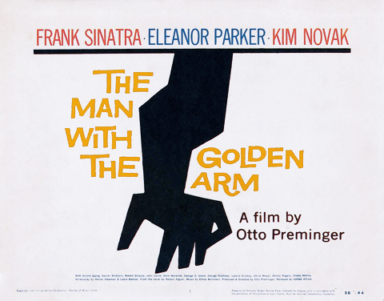
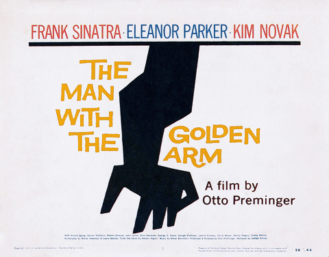

1603
Pentagraph
Christoph Schreiner
Device to copy and scale diagrams. One arm of the pantograph contained a small pointer, while the other held a drawing implement, and by moving the pointer over a diagram, a copy of the diagram was drawn on another piece of paper. By changing the positions of the arms in the linkage between the pointer arm and drawing arm, the scale of the image produced can be changed.
1887
Arts and Crafts
Bubbles
Sir John Everett Millais
Painting became famous when it was used over many generations in advertisements for Pears' soap. Led to widespread debate about the relationship between art and advertising.
1880
First Graphics Tablet: Telautograph
Elisha Gray
Enabled written communication over long distances by the use of recorded electrical impulses that transmitted to the receiving telautograph. There was a pen attached to the receiving device that would copy the writing. It became a popular for sending signatures over long distances. It was primarily used by banks and doctors.
1907
Allgemeine Elektrizitäts-Gesellschaft Branding
Peter Behrens
AEG, Allgemeine Elektrizitäts-Gesellschaft: First company to seek unified visual character to products, environments and communications. Behrens designed the entire corporate identity (logotype, product design, publicity, architecture, type etc.) and for that he is considered the first industrial designer in history: Designed a modular tea kettle by creating a system of interchangeable components. In 1910, Behrens designed the AEG Turbine Factory.
1910-50
Colonies are dissolved, monarchies are replaced by democracy, communism, socialism → social, political and cultural upheaval
Invention of motorcar, airplane, motion picture, wireless radio, insights into medicine and biology → economic character and cultural evolution
World War I, II → religion, moral standards, societal classes / castes, significance of art, objective world view, elemental ideas of colour and form are put under intense scrutiny
1910-1920
Cubism
Analyse reality from multiple viewpoints, break in down into geometrical shapes: Make way for invented form
No longer focus on imitating reality but creating rhythmic compositions with shape, colour, form, textures
Emphasis on spatial relationship
Invented form is used to represent reality
1913
European avant-garde art in America
Armory Show
Introduced US audiences to the great masters of modern European art for the first time and gave young American artists an opportunity to show their work alongside them.
1910-1925
Futurism
“All the arts are to test their ideas and forms against the new realities of scientific and industrial society.”
“We will destroy museums, libraries, fight against cowardice”
Enthusiasm for war, machine age, speed, modern life, past should be forgotten
Imitation, decoration is perceived as wasteful, originality is key, expressive work and breaking rules is encouraged
Dynamism, speed, time are common themes
Start anew within the field of art, remove all themes and subjects that have been used, believe in the future and the advances of humanity
1913
Futurism
Montage + Vallate + Strade + Joffre
Filippo Marinetti
Explosive emotionally charged visualisation of poetry that defies correct syntax and grammar. Words in freedom: Dynamic, symbolic, painterly typographic, against harmonic design.
1915-20
Dada
Violent rebellion against war
Destructive element blind faith in technology
Against decadence, luxury, art as intellectual subject, societal structures
Religion and current moral standards incoherent with current times
Existential issues, everything is random and result of willful choice
Photomontages
“Through a synthesis of spontaneous chance actions with planned decisions, Dadaists helped to strip typographic design of its traditional precepts.”
1917
Dada Manifesto
Hugo Ball
Chance placement and absurd titles. Anarchistic movement.
1922
London Transport System Poster Series
Edward McKnight Kauffer
Cubism, Futurism and Surrealism found expression in his posters, which translated the complicated language of the avant-garde into accessible commercial design.
1920s
De Stijl
Sought an expression of the mathematical structure of the universe and the universal harmony of nature
Pure line, shape, and color (pure geometric abstraction) to create a universe of harmoniously ordered, pure relationships: Prototype for a new social order
Horizontal, vertical as two fundamental opposites shaping our world
Red, yellow, blue: Principal colors
Scientific theory, restraints of mechanical production, and rhythms of modern city formed from universal laws
Purify art by banning naturalistic representation, external values, and subjective expression
Unification of social and human values, technology, and visual form → goal for those who strove for new architecture and graphic design
1922
Tableau II
Piet Mondrian
In line with De Stijl practice, he restricted his compositions to predominantly off-white grounds divided by black horizontal and vertical lines that often framed subsidiary blocks of individual primary colors. A representative example of this period, demonstrates the artist’s rejection of mimesis, which he considered a reprehensibly deceptive imitation of reality.
1920s-30
Constructivism
Focus on industrial design, visual communications, and applied arts serving the new communist society
Communism and social engineering would create a new order, technology would provide for society’s needs
The artist / designer / “constructor” would forge a unity between art and technology by constructing a new world of objects to provide mankind with a richer society and environment.
Designers, artists, writers have the same societal status as scientists
No self-expression or pursuit of beauty
Creation was purely to carry out fundamental analysis of materials, forms which might lead to the design of functional objects, often of mass-production
1923-1933
Russian Film Posters
Stenberg Brothers
Shift from the illustrator-as-creator to the constructor-as-creator or nonlinear-narrator-as-creator. In the visual language of the constructor or Constructivist, the Stenbergs and other graphic designers and artists assembled images, such as portions of photographs and preprinted paper, that had been created by others. Thus, the Stenbergs and others realized wholly new images (or compositions) which were no longer about realism. Hence, graphic design as a modern expression eschewing traditional fine art was born in the form of the printed reproductions of collage or assemblage. One of the causes of the avant-garde artists in the new Russia, who considered fine art to be useless, was served when the Stenbergs and others as constructors-as-creators produced posters that had a use, particularly to serve the state. Commercial graphic design and advertising is propaganda, the dissemination of propaganda (пропаганды) was considered a desirable and honorable practice in Russia at the time. In fact, the Bolsheviks, who sought to reform the peasant class, considered film to be a potent propaganda tool for communicating with a widely illiterate population.
1924
Artist as the constructor
El Lissitzky
The essence of New Vision photography is pointedly expressed in this picture, commonly known as The Constructor, which puts the act of seeing at center stage. Lissitzky's hand, holding a compass, is superimposed on a shot of his head that explicitly highlights his eye: insight, it expresses, is passed through the eye and transmitted to the hand, and through it to the tools of production. Devised from six different exposures, the picture merges Lissitzky's personae as photographer (eye) and constructor of images (hand) into a single likeness. Contesting the idea that straight photography provides a single, unmediated truth, Lissitzky held instead that montage, with its layering of one meaning over another, impels the viewer to reconsider the world. It thus marks a conceptual shift in the understanding of what a picture can be.
1926
Metropolis
Fritz Lang
It is regarded as a pioneering work of the science-fiction genre in movies, being among the first feature-length movies of the genre. The art direction draws influence from Bauhaus, Cubist and Futurist design.
1939
First Illustrated Album Cover CBS
Alex Steinweiss
Each record was typically packaged in dull paper or cardboard sleeves that either had the name of the producer on it or the name of the retailer who was selling it. For Steinweiss, album artwork offered the complete package. He approached each and every album like a small canvas. For him, they were opportunities for experimentation and every day he'd play with layout, illustration, colour, typography and hand-lettering. His real talent lay in his ability to combine all these unique elements effortlessly and fluidly. With a Steinweiss cover, you were nearly always guaranteed to see modern elegant type, rich and vibrant colours and beautiful lively illustration.
1940
Direction
Paul Rand
Marguerite Tjader Harris was the daughter of a wealthy Connecticut munitions manufacturer. She was intent on having Rand design covers for Direction, an arts and culture magazine that she published on a shoestring, which featured articles by Le Corbusier, Jean Cocteau, and other avant-gardists. She offered Rand no recompense, but plenty of freedom and, ultimately, a couple of original Le Corbusier drawings. But Rand has another motive, “In a country that was used to decorative work, the common sense way to have what I was doing accepted was to do it for free,”. Each Direction cover illustrated a particular theme or point of view; the first, and his most politically astute, showed a map of Czechoslovakia torn in half, representing the nation’s evisceration by the Nazis. Contrasted with an E. McKnight Kauffer Direction covers showing a realistic hand impaled by a Nazi dagger, Rand’s abstract depiction was both subtle and eloquent. Rand avoided conventional propagandistic tools in favor of imagery he believed would serve as both art and message.
1945
As We May Think
Vannevar Bush
Many scientists, especially physicists, get new duties during the War. Now, after the war, they need new duties.
Section 1: The use of Science has improved tremendously in many ways for humans. The knowledge of science has grown considerably. However, the way we manage it still remains the same for centuries. We are no longer able to use what Science finds out. Alternatively, the technology has matured greatly and allows us to now produce complicated, yet cheap and dependable machines.
Section 2: Science is really useful. However, in order to have it to be very efficient and useful it should not only be stored but also be frequently consulted and enhanced. In the future we would probably be able to store human writings in a small room with the use of photography.
Section 3: Using the latest advances of speech recording and stenography, we will soon be able to make printing immediate. The advancement of photography is not going to stop. The thought process of repetition could be in relation to machine. Electrical machines will be the advancement of arithmetical computation.
Section 4: There is more to the scientific reasoning than just arithmetic. There are a few machines that are not used for arithmetic, partly due to the market’s needs. Solving higher mathematics require other repetitive processes of thought to be mechanized.
Section 5: A machine could be used anywhere where there is logical thought process. At this moment we do not have the necessary tools for the selection (the key to utilize science) of knowledge. One of the best forms of selection is illustrated by the automatic telephone exchange.
Section 6: There is a problem with selection. The main problem of it is the deficiency of the indexing systems. When data is recorded and put into storage, it is usually filed alphabetically or numerically. The human mind works differently. It works according to association. Instead of using selection by indexing, selection by association may be mechanized. Thus, improving the permanence and clarity of the items stored. The memex is a device that could store information and communication (large memory). Some things that can be entered are, newspaper and books. The user is also able to find a particular book as he or she taps on its code on the keyboard. The codes that are frequently used to call forth pages are mnemonic and its possible to browse these pages at different speeds.
Section 7: The main feature of the memex is the ability to tie two things together at will. In other words, to be able to associate two arbitrary items when wanted. The user is also able to build a trail, in which they name it, insert a name into the code book, and then taps it out on the keyboard. At any time, the user is able to view two items at the same time, parallel viewing. It is also possible to pass items to another memex.
Section 8: The trails made can be shared with others and can also be published, like an encyclopedia (many more new forms are to appear). Soon we will be able to establish some kind of direct connection with absorbing material of the record with one of our senses, tactilely, orally, and visually. It would be great for humans to be able analyze present issues. As of now, science has been applied to live better, as well as for destruction. Possibly we may be able to apply the record to become wiser.
1949
Information theory
Claude Shannon
This work focuses on the problem of how best to encode the information a sender wants to transmit. In this fundamental work, he used tools in probability theory, developed by Norbert Wiener, which were in their nascent stages of being applied to communication theory at that time. Shannon developed information entropy as a measure of the uncertainty in a message while essentially inventing the field of information theory. Information theory's fundamental contribution to natural language processing and computational linguistics was further established in 1951, in his article "Prediction and Entropy of Printed English", showing upper and lower bounds of entropy on the statistics of English – giving a statistical foundation to language analysis. In addition, he proved that treating whitespace as the 27th letter of the alphabet actually lowers uncertainty in written language, providing a clear quantifiable link between cultural practice and probabilistic cognition.
1950
CBS Symbol
William Golden
The famous eye symbol was developed to provide special identification for CBS Television. Kurt Weihs, who was involved in the project, remembers that the eye had its beginnings in an article in Portfolio about the then relatively esoteric subject of Shaker design. “Among the illustrations was an eye symbol. Golden picked it up and used it for a CBS sales portfolio. Then he felt there was more to it and used it in an ad. I redesigned the earlier versions, and it became the mark for CBS Television. We had done eyes before. Everybody had done eyes; but this one was something that really worked. I felt that the eye could have become the corporate symbol. We saw the eye as symbolizing CBS 'looking at the world.'” William Golden applied new ideas, forms, and methods to the world of advertising and promotional graphics. The body of his work endures as a milestone in the history of graphic design. Providing a map of uncharted territory, Golden's program of promotional advertising and identity design for CBS was innovative and set a standard of excellence which has endured over the years. “I think that all the trouble in this field comes from someone's assumption that they are, maybe, the same person. I think the fine artist makes a personal statement about his world and his reactions to his world. He makes it to a limited audience or to a big audience—but it's all his. The advertising designer has a completely different function. He may be someone who thought he wanted to be a painter—but wasn't. If (the designer) is honest enough, he becomes a professional who can do something that is not his own. I think the trouble comes when he tries to make it a work of art, too. I think a lot of designers who are talented and intelligent don't find this very satisfying. But they're not going to find it more satisfying by pretending it's something it isn't.”
1920s, 1950s
New International Typographic Style
Unity of design achieved by asymmetrical organization of elements on a mathematically constructed grid
Objective photography and copy that present visual and verbal information in a clear and factual manner, free from the exaggerated claims of propaganda and commercial advertising;
Use of sans-serif typography set in a flush-left and ragged- right margin configuration
Defined design as a socially useful and important activity, born in the institutional context, majority of pieces from this movement are posters, stamps, institutional typographical identity, street signs: Creation of user-friendly interfaces
Personal expression and eccentric solutions were rejected, while a more universal and scientific approach to design problem solving was embraced
Designers define their roles not as artists but as objective conduits for spreading important information between components of society
Achieving clarity and order is the ideal
Solution to a design problem should emerge from its content
1954
Univers Typeface
Adrian Frutiger
Released by his employer Deberny & Peignot in 1957. Classified as a neo-grotesque sans-serif, one based on the model of nineteenth-century German typefaces such as Akzidenz-Grotesk, it was notable for its availability from the moment of its launch in a comprehensive range of weights and widths. The original marketing for Univers deliberately referenced the periodic table to emphasise its scope. Univers was one of the first typeface families to fulfil the idea that a typeface should form a family of consistent, related designs. Past sans-serif designs such as Gill Sans had much greater differences between weights
1955
 

Man with the golden arm
Saul Bass
He created an arresting image of a distorted, disjointed arm. The semi-abstract form helped distance the image from the harsh realities of shooting up, although they are implicit in the (dis)figuration. As well as being disconnected from a body, the black arm has the appearance of being petrified and transformed into something else, just as the Sinatra character in the film is transformed by his addiction. The title sequence was equally compelling. Here was modern art on the movie screen. Saul stated that, “The intent of this opening was to create a mood spare, gaunt, with a driving intensity… [that conveyed] the distortion and jaggedness, the disconnectedness and disjointedness of the addict’s life the subject of the film.” Accompanied by Elmer Bernstein’s driving jazz-like score, and set against a black background, white bars appear, disappear and form abstract patterns before finally coalescing into the film’s symbol. Contrasts between the black and white heighten the strident intensity, and the disjunctures encapsulate the mood of the main character, a downbeat drummer with a penchant for gambling and drugs.
1958
DARPA
Department Advanced Research Projects Agency
An agency of the U.S. Department of Defense responsible for the development of emerging technologies for use by the military. By collaborating with academic, industry, and government partners, DARPA formulates and executes research and development projects to expand the frontiers of technology and science, often beyond immediate U.S. military requirements. DARPA-funded projects have provided significant technologies that influenced many non-military fields, such as computer networking and the basis for the modern Internet, and graphical user interfaces in information technology.
1961
Helvetica Typeface
Edouard Hoffman, Max Miedinger
1961-1973
A Little-Known Story about a Movement, a Magazine, and the Computer’s Arrival in Art New Tendencies and Bit International
Darko Fritz, Jose Maria Yturralde, Vladimir Bonacic
This recent MIT press publication documents a short-lived but intense artistic experiment that took place in Yugoslavia fifty years ago but has been influential far beyond that time and place: the New Tendencies movement, which begun in Zagreb in 1961. Pursuing the idea of “art as visual research"” the New Tendencies movement proceeded along a path that led from Concrete and Constructivist art, Op art, and Kinetic art to computer-generated graphics, film, and sculpture. With their exhibitions and conferences and the 1968 launch of the multilingual, groundbreaking magazine Bit International, the New Tendencies transformed Zagreb into an international meeting place where artists, engineers, and scientists from both sides of the Iron Curtain gathered around the then-new technology. For a brief moment in time, Zagreb was the epicenter of explorations of the aesthetic, scientific, and political potential of the computer.
1962

First noteworthy computer design tool
Ivan Sutherland
He invented Sketchpad in 1962 while at MIT. Professor Claude Shannon signed on to supervise Sutherland’s computer drawing thesis. Among others on his thesis committee were Marvin Minsky and Steven Coons. Sketchpad was an innovative program that influenced alternative forms of interaction with computers. Sketchpad could accept constraints and specified relationships among segments and arcs, including the diameter of arcs. It could draw both horizontal and vertical lines and combine them into figures and shapes. Figures could be copied, moved, rotated, or resized, retaining their basic properties. Sketchpad also had the first window-drawing program and clipping algorithm, which allowed zooming.
1964
Designing Programmes
Karl Gerstner
In four essays, the author provides a basic introduction to his design methodology. Instead of set recipes, the method suggests a model for design in the early days of the computer era. The intellectual models it proposes, however, continue to be useful today. What it does not purvey is cut-and-dried, true-or-false solutions or absolutes of any kind - instead, it develops fundamental principles in an innovative and future-oriented way. The book is especially topical and exciting in the context of current developments in computational design, which seem to hold out the possibility of programmed design. With many examples from the worlds of graphic and product design, music, architecture, and art, it inspires the reader to seize on the material, develop it further, and integrate it into his or her own work.
1965
Campbell Soup
Andy Warhol
When Warhol first exhibited these Campbell’s Soup Cans in 1962, they were displayed together on shelves, like products in a grocery aisle. Though Campbell’s Soup Cans resembles the mass-produced, printed advertisements by which Warhol was inspired, it is hand-painted. In this work, he mimicked the repetition and uniformity of advertising by carefully reproducing the same image across each individual canvas. He varied only the label on the front of each can, distinguishing them by their variety. Towards the end of 1962, shortly after he completed Campbell’s Soup Cans, Warhol turned to the photo-silkscreen process. A printmaking technique originally invented for commercial use, it would become his signature medium and link his art making methods more closely to those of advertisements.
1965
Op art
The responsive Eye
MoMA
The original exhibition was so groundbreaking that it drew more than 180,000 onlookers to take in this curious new style, where images seemed to jump and move depending on how the viewer looked at them. The effect was so jarring that museum guards were given permission to wear sunglasses. New York Times critic John Canaday heralded the exhibition, which was organized by William C. Seitz and featured geometric abstractions from artists ranging from British artist Bridget Riley to former Josef Albers student Richard Anuszkiewicz, as “one of the most exciting artistic events in a decade.” While the show was divisive, one thing was certain: with its crisp, clean lines and high-tech appeal was the perfect visual expression for the space age.
1967
Montreal Expo
Shigeo Fukuda
“I believe that in design, 30% dignity, 20% beauty and 50% absurdity are necessary. Rather than catering to the design sensitivity of the general public, there is advancement in design if people are left to feel satisfied with their own superiority, by entrapping them with visual illusion.”
1968
Sword of Damocles
Ivan Sutherland
Sutherland's system displayed output from a computer program in the stereoscopic display. The perspective that the software showed the user would depend on the position of the user's gaze—which is why head tracking was necessary. The weight of Sutherland's HMD, and the need to track the head movements necessitated the HMD being attached to a mechanical arm suspended from the ceiling of the lab. The formidable appearance of the mechanism inspired its name. First steps toward Augmented Reality.
1968
Mother of all Demos
NLS
Douglas Engelbart
The live demonstration featured the introduction of a complete computer hardware and software system called the oN-Line System or, more commonly, NLS. The 90-minute presentation essentially demonstrated almost all the fundamental elements of modern personal computing: windows, hypertext, graphics, efficient navigation and command input, video conferencing, the computer mouse, word processing, dynamic file linking, revision control, and a collaborative real-time editor (collaborative work). Engelbart's presentation was the first to publicly demonstrate all of these elements in a single system. The demonstration was highly influential and spawned similar projects at Xerox PARC in the early 1970s. The underlying technologies influenced both the Apple Macintosh and Microsoft Windows graphical user interface operating systems in the 1980s and 1990s.
NLS, or the "oN-Line System", was a revolutionary computer collaboration system from the 1960s. Designed by Douglas Engelbart and implemented by researchers at the Augmentation Research Center (ARC) at the Stanford Research Institute (SRI), the NLS system was the first to employ the practical use of hypertext links, the mouse, raster-scan video monitors, information organized by relevance, screen windowing, presentation programs, and other modern computing concepts. It was funded by the Defense Advanced Research Projects Agency, NASA, and the U.S. Air Force.
1969
Esquire Cover
George Lois
1969
Laser printer
Xerox
Gary Starkweather adapted Xerox copier technology adding a laser beam to it to come up with the laser printer.
1972
Object-Oriented Programming
Xerox
Smalltalk, the first object-oriented programming language, enables program improvement without rewrites—functionality that revolutionizes software development and subsequent programming systems.
1973

Prototypes Alto
Xerox
The world’s first personal computer—with the first "what-you-see-is-what-you-get" (WYSIWYG) editor, first commercial use of a mouse, graphical user interface (GUI) and bit-mapped display.
1973
Ethernet
(Precursor to internet) Xerox
An internal memo coins the term "Ethernet" to describe a proposed system of interacting workstations, files and printers, linked via coaxial cable within a local area network, which components can join or leave without disturbing data traffic.
1973
Bartok Cover, CBS Records
Paula Scher
1975

Xerox Alto, first GUI
Xerox
Used the desktop, office, trashcan and other metaphors from bureaucracy to depict abstract reality. First graphical user interface (GUI), which uses icons, pop-up menus and overlapping windows with simple point-and-click control—an innovation that will dramatically influence PC interface design.
1975
I Love NY
Milton Glaser
1984

The Koala Pad
David Thornburg
Programmable button and pressure sensitive stylus. One unique feature of the program, for its time, was that it held two pictures in the computer's memory, allowing the user to flip from one to the other—a function commonly used in order to study the differences between an original and modified picture, and to copy and paste between two different pictures.
1984
Apple Macintosh
Chiat/Day Agency, Apple Computers
Allusions to Orwell's 1984, making people think about computers, identifying the user-friendly interface as a personal computer which departed from previous business-oriented systems, and becoming a signature representation of Apple products.
1984
Perception vs Reality, Rolling Stone Magazine
Fallon McElligott and Rice
1984
Identity for Olympic Games LA
Sussman/Preja & Company Inc
1986
Apple IIgs
Apple Computers
Advanced model of the successful Apple II series, based on 16-bit technology (in fact, virtually two machines into one). It came with a new operating system, the Apple GS/OS, which features a Finder-like GUI, very similar to that of the Macintosh series, able to deal with the advanced graphic abilities of its Video Graphics Chip.
1988
Cover Beach Culture
David Carson
1993
Ray Gun Magazine
David Carson
2000
Tablet PC
Microsoft Bil Gates
2007
iPhone
Apple
2015
Braille Tablet
Blitab
Tiny bubbles rise from various holes in a grid that dominates the top half of the gadget. Sixty-five words at a time, this tablet translates text from the Web and other digital sources into Braille so people who are blind or have low vision can more easily access anything from mindless jokes to e-books to political news.